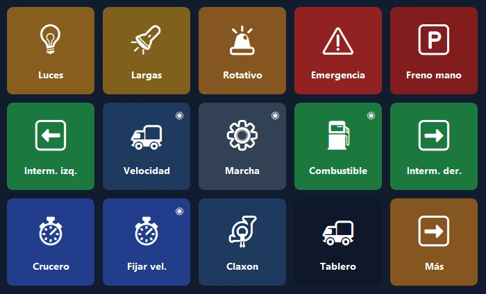
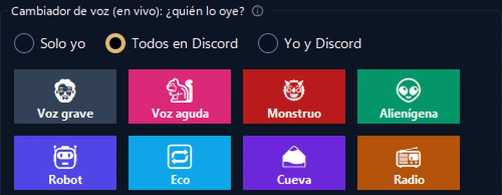

Tu teléfono, el panel de control de tu PC.
Atajos con un toque, OBS, Discord, Spotify y tableros de juego. Por USB, Wi‑Fi o datos móviles, cifrado de extremo a extremo.
El tablero de tu camión, ahora en tu teléfono.
Velocidad, RPM y combustible en vivo con testigos de advertencia realistas. El teléfono vibra si superas el límite de velocidad.
- 🚦Un tablero de verdadVelocidad, límite, RPM, combustible y hora de llegada; los testigos se encienden como en el juego.
- 🕹Control con un toqueLuces, freno de mano, control de crucero; mira a la izquierda o a la derecha con un toque.
- 📳Sin configuraciónAl abrir el juego, el teléfono te ofrece un panel listo y cambia a él cada vez que juegas.

Controla tu stream con una mano.
Tu teléfono en lugar de un aparato caro: OBS, efectos de sonido, Discord y música en una sola pantalla.
- 🎬Control de OBSEscenas, grabación y transmisión, con los tiempos en el propio botón.
- 📳Alertas de salud del streamEl teléfono vibra si hay congestión o fotogramas perdidos.
- 🎙Cambiador de voz en vivoEfectos y panel de sonidos que tus amigos oyen en Discord; silencia el micrófono con un toque.

La pantalla más útil de tu escritorio.
Empieza en un minuto con un diseño listo; los logos reales de tus programas se añaden solos.
Segunda pantalla
Mira la pantalla del PC en el teléfono y úsala como ratón y teclado táctiles.
Volumen por app
Ajusta el volumen de cada programa por separado; auriculares ↔ altavoces con un toque.
Páginas inteligentes
Las páginas siguen al programa en primer plano; temporizadores, carpetas y acciones de varios pasos.
Se conecta desde cualquier lugar
No hace falta la misma Wi‑Fi: también funciona con datos móviles y con varios PC.
Copia cifrada en la nube
Tu diseño se respalda cifrado, sin cuenta, y vuelve en un PC nuevo.
Privacidad
Sin cuenta, sin anuncios, sin rastreo. Tus botones se quedan en tus dispositivos.
Listo en un minuto.
Instala el programa
Descarga PanelDeck gratis para Windows y ábrelo.
Escanea el código QR
La app del teléfono se empareja en segundos con el código QR.
Toca
Elige un diseño listo o crea tus propios botones.
Paga una vez, tuyo para siempre.
Sin suscripción, sin anuncios, sin rastreo. Todas las actualizaciones incluidas.
Gratis
- Conexión por USB, Wi‑Fi y datos móviles
- 6 botones en la primera página
- Atajos, multimedia, abrir programas, Discord, temporizador
PanelDeck Pro
- 6 pestañas, carpetas y botones ilimitados
- Segunda pantalla, controles de volumen, información en vivo
- Tablero del camión, alertas con vibración, perfiles de juego
- Copia cifrada en la nube
Lo que conviene saber
¿Necesito una cuenta?
No. PanelDeck no pide cuenta; tus botones se quedan en tus dispositivos.
¿Funciona fuera de casa?
Sí. Sin la misma Wi‑Fi, el teléfono se conecta por datos móviles, cifrado de extremo a extremo.
¿Con qué juegos funciona?
Euro Truck Simulator 2 y American Truck Simulator tienen soporte completo. Los tableros en vivo para simuladores de carreras y de vuelo están en beta.
¿Hay versión para iPhone?
Por ahora, Android. La versión para iPhone y iPad está en la hoja de ruta.
¿Y si Windows dice que “protegió tu PC”?
Haz clic en “Más información” → “Ejecutar de todas formas”. Detalles en la guía de instalación.